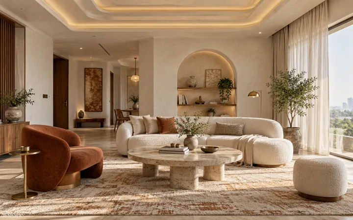
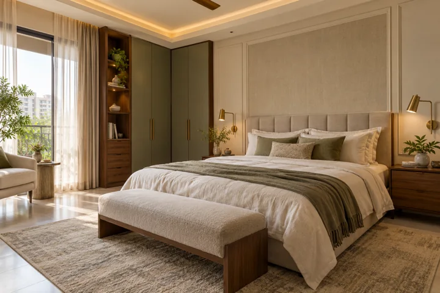
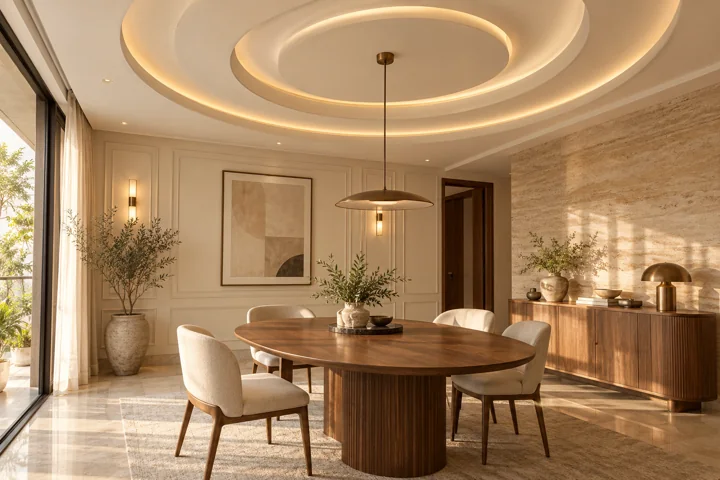

AI DESIGN CONCEPT01 / LIVING
The warm, welcoming living room
Soft curves. Natural textures. Room to breathe.
INTERIORS, WITH A PERSONAL TOUCH
Thoughtful interiors, beautiful ceilings and the little details that make a house your own. Discover SONU Interior Home Designer in Badlapur.
5.0 on Google32 reviews · checked October 2026BEAUTIFUL SPACES. EVERYDAY JOYS.
Your local interior design destination
in Belavali, Badlapur West.
A welcoming living room. A beautifully finished ceiling. A wall that finally feels complete. We believe the details you live with every day deserve a little more thought.
SONU Interior Home Designer offers interior work, gypsum walls, false ceilings, decorative mouldings and tiling. Bring your ideas to our Badlapur team and take the first step towards a space that feels your own.
Discover what we doWHAT WE CAN HELP WITH
Gypsum ceiling designs, layered profiles and considered cove details that bring definition to your room.
02Gypsum walls and decorative mouldings that add depth, proportion and a quiet sense of character.
03Explore tiling and surface finishes that work together, from the floor underfoot to the walls around you.
04Discuss your home’s interior work with our Badlapur team, from an individual room to a broader refresh.
THE MOODBOARD
Find the feeling you want to bring home.
Explore the collection
AI DESIGN CONCEPTSoft curves. Natural textures. Room to breathe.

AI DESIGN CONCEPTCalm tones and a sense of sanctuary.

AI DESIGN CONCEPTSculptural ceilings meet golden evening light.
All imagery in this collection is AI-generated design inspiration, not photographs of completed SONU projects.
SMALL DETAILS. A DIFFERENT FEELING.
Save the spaces you love. Share your favourite details with us. The best starting point is knowing what makes you feel at home.
Share your ideasA CLEAR WAY FORWARD
Here’s how to start a conversation about your space, without the guesswork.
Send a few photos, your location and the changes you have in mind on WhatsApp.
Talk through your style, scope and budget. Request a suitable consultation time.
Confirm the materials, quotation, schedule and work scope directly with the team.
LOCAL VOICES, REAL EXPERIENCES
Read what customers have shared on our Google Business Profile, and get to know the business behind your next project.
Read the Google reviewsA NEW CHAPTER FOR YOUR HOME
Tell us what you’re imagining. Let’s explore what your space could become.
Discuss your space on WhatsApp Or call +91 91195 73539